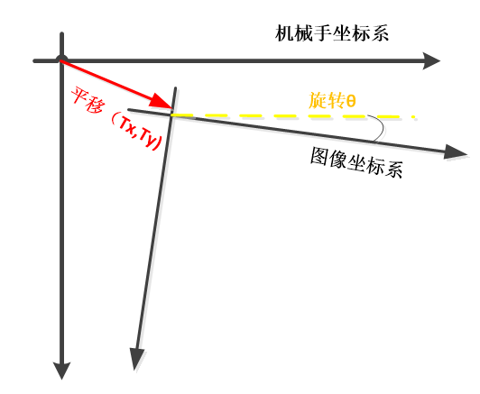
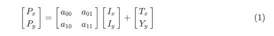
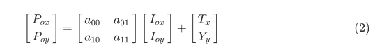
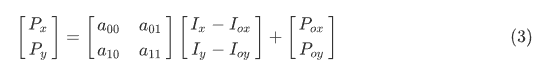
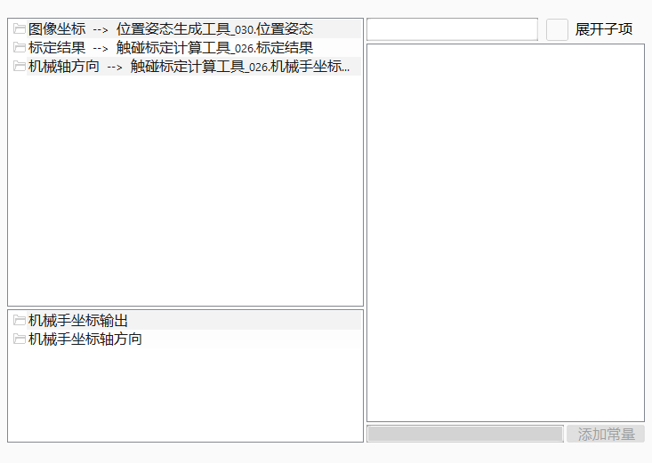
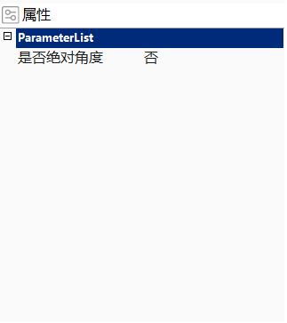

在机械手标定后，通过链接标定结果，将图像坐标转换成机械手坐标。链接的图像坐标类型为GcCoordPos；链接的标定结果类型为GcCalibrateResult，可链接标准标定计算工具的计算结果、触碰标定计算工具的标定结果、基准修正标定计算工具的标定结果、标定结果手动融合工具的标定结果和关联标定计算工具的标定结果。
在对位项目中需要将图像坐标转化为机械坐标。
图像坐标系和机械手坐标系可以抽象成共面的直角坐标系，如下图所示：

其中两个坐标系的转换关系可以由如下公式表示。

标定结果中存有一组基准图像坐标和机械手坐标，二者存在如下关系：

所以对与任何一个图像坐标都可通过（1）-（2）求出机械手坐标。



无
| 参数名称 | 参数描述 |
|---|---|
| 是否绝对角度 | 是： 绝对角度是产品在图像坐标系下的角度，最终的机械手坐标结果驱动机械手进行绝对旋转 否： 相对角度是实时产品相对于模板产品的角度，最终的机械手坐标结果驱动机械手进行相对旋转。 |
| 图像坐标 | 待转换为机械手坐标的原始图像坐标 |
| 标定结果 | 标定计算过程输出的标定结果 |
| 机械轴方向 | 机械手各轴正方向 |
| 参数名称 | 参数描述 |
|---|---|
| 机械手坐标输出 | 转换后的机械手坐标结果 |
| 机械手坐标轴方向 | 输出机械手各轴正方向 |
| 执行结果 | 工具执行结果 |
| 执行时间 | 工具执行时间 |
参见“\Samples\机械手拾取坐标转换工具.gvp”。